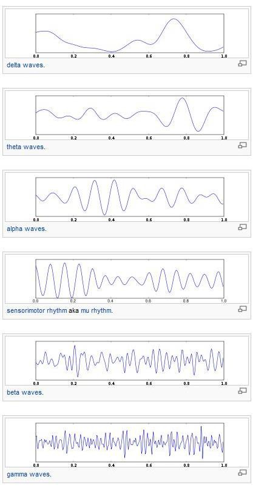

Experimental Objective-Record EEG. At the same time, Various EEG frequency components are calculated.
Calculation method- Frequency bandpass filters are used for every different frequency components of EEG.
Scientific principle- Electroencephalography (EEG) is the recording of electrical activity along the scalp produced by the firing of neurons within the brain. In clinical contexts, EEG refers to the recording of the brain's spontaneous electrical activity over a short period of time, usually 20–40 minutes, as recorded from multiple electrodes placed on the scalp. In neurology, the main diagnostic application of EEG is in the case of epilepsy, as epileptic activity can create clear abnormalities on a standard EEG study
The brain's electrical charge is maintained by billions of neurons. Neurons are electrically charged (or "polarized") by membrane transport proteins that pump ions across their membranes. When a neuron receives a signal from its neighbour via an action potential, it responds by releasing ions into the space outside the cell. Ions of like charge repel each other, and when many ions are pushed out of many neurons at the same time, they can push their neighbours, who push their neighbours, and so on, in a wave. This process is known as volume conduction. When the wave of ions reaches the electrodes on the scalp, they can push or pull electrons on the metal on the electrodes. Since metal conducts the push and pull of electrons easily, the difference in push, or voltage, between any two electrodes can be measured by a voltmeter. Recording these voltages over time gives us the EEG.
Following are the frequency components:-

Wave Patterns-

Application - A routine clinical EEG recording typically lasts 20–30 minutes (plus preparation time) and usually involves recording from scalp electrodes. Routine EEG is typically used in the following clinical circumstances:
- To distinguish epileptic seizures from other types of spells, such as psychogenic non-epileptic seizures, syncope (fainting), sub-cortical movement disorders and migraine variants.
- To differentiate "organic" encephalopathy or delirium from primary psychiatric syndromes such as catatonia
- To serve as an adjunct test of brain death
- To prognosticate, in certain instances, in patients with coma
- To determine whether to wean anti-epileptic medications
At times, a routine EEG is not sufficient, particularly when it is necessary to record a patient while he/she is having a seizure. In this case, the patient may be admitted to the hospital for days or even weeks, while EEG is constantly being recorded (along with time-synchronized video and audio recording). A recording of an actual seizure (i.e., an ictal recording, rather than an inter-ictal recording of a possibly epileptic patient at some period between seizures) can give significantly better information about whether or not a spell is an epileptic seizure and the focus in the brain from which the seizure activity emanates.

1) To study the wave shapes of EEG signals recorded under 10 different channels.
3) To review output graph for different frequency components such as Delta, Alpha, Beta and Gamma.
4) To assess your knowledge about the experiment by answering a questionnaire at the end of the experiment.

1. BIOPAC MP150 system
2. EEG-100C BIOPAC Amplifiers
3. AcqKnowledge Software (BIOPAC)
4. EEG Leads
5. Digital EEG Patient Simulator


The quiz is included in the standalone application.

Procedure for the experiment is shown in the following video (Skip to 1:35).

- http://en.wikipedia.org/wiki/Electroencephalography
- http://emedicine.medscape.com/article/1139332-overview
- http://www.epilepsysociety.org.uk/closer-look-eeg#.VQf6ho6Uf24
- http://www.hopkinsmedicine.org/healthlibrary/test_procedures/neurological/electroencephalogram_eeg_92,p07655/
- http://www.emedicinehealth.com/electroencephalography_eeg/article_em.htm